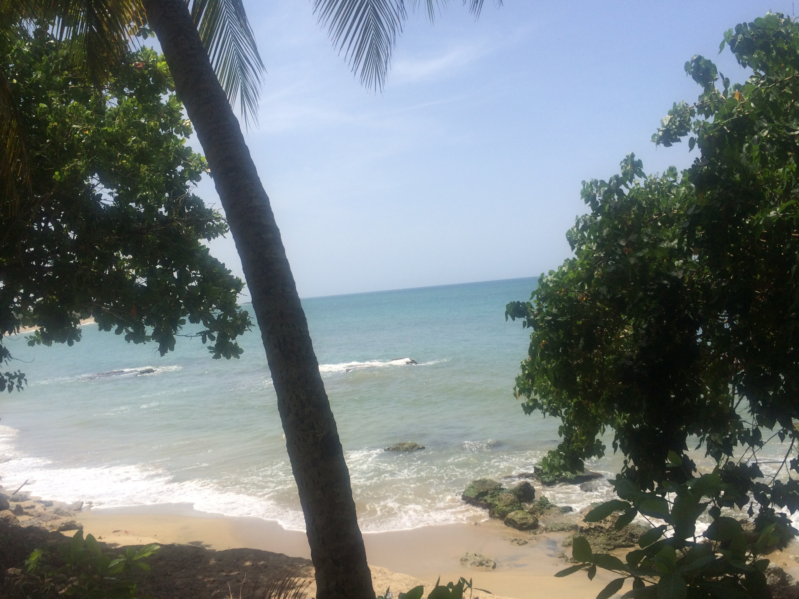

My name is Rose and I was born and raised in Sunset Park, Brooklyn. I am of Puerto Rican descent and travel to the island to visit my family at least once a year. In my spare time I enjoy walking or jogging along Owls Head Pier. It helps me relax and reflect on my day. I also enjoy spending time with my family and dancing salsa.
Along with doing and enjoying your usual everyday things, I am passionate about teaching. I have been teaching Mathematics in Sunset Park, Brooklyn for almost 8 years and every day is a new experience.  CS4CSReflection